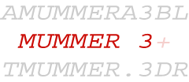

|  |
Ultra-fast alignment
of large-scale DNA and protein sequences |
Overview
MUMmer is a system for rapidly aligning entire genomes, whether
in complete or draft form. For example, MUMmer 3.0 can find all
20-basepair or longer exact matches between a pair of 5-megabase
genomes in 13.7 seconds, using 78 MB of memory, on a 2.4 GHz Linux
desktop computer. MUMmer can also align incomplete genomes; it can
easily handle the 100s or 1000s of contigs from a shotgun
sequencing project, and will align them to another set of contigs
or a genome using the NUCmer program included with the system. If
the species are too divergent for a DNA sequence alignment to
detect similarity, then the PROmer program can generate alignments
based upon the six-frame translations of both input sequences. The
original MUMmer system, version 1.0, is described in our 1999 Nucleic Acids Research paper.
Version 2.1 appeared a few years later and is described in our 2002 Nucleic Acids Research paper,
while MUMmer 3.0 was recently described in our 2004 Genome Biology paper. We have also developed a GPU accelerated version of MUMmer called MUMmerGPU.
For more
information regarding the MUMmer package, please refer to the:
Distribution
Online manual
Online tutorials
To receive software update notices, please join the users'
mailing list. This list will only be used to announce major
version releases:
Please send questions and all other correspondence directly to
the help list:

Open Source Announcement
MUMmer is now an open source
project hosted at Sourceforge.net.
This means free access to all the source code for both non-profit and for-profit
users! Please refer to the LICENSE file included in the package for a description
of the Artistic License, the same OSI-certified open source licensed used
by Perl and countless other packages. We encourage you to contact us (though
you are not required to) if you wish to contribute to our ongoing improvement
and development of the software.
Collaborative projects that utilize MUMmer's open source license include:
- Insignia - A web
service for the identification of DNA signatures suitable for
real-time pathogen detection assays.
- AMOS - A genome
assembly toolkit including AMOScmp, a comparative genome assembler
built with MUMmer.
- SyntenyMiner -
A visualization tool for interrogation of multiple whole genome
alignments.
- Tandemizer - A
visualization tool for the analysis of tandem array blocks across
multiple genomes.
Highlights of Release 3.0
- Open source
- Improved efficiency
- Ability to find non-unique, repetitive matches as well as unique matches
- New graphical output modules
Suffix Trees
Residing at the core of the MUMmer package is the 'mummer' matching algorithm,
which builds and searches a suffix tree data structure. Suffix trees can be
built and searched in linear time using linear space. In creating this structure,
MUMmer 3.0 uses approximately 17 bytes for each basepair in the reference
sequence. Furthermore, the query sequence is "streamed" past the reference
suffix tree, so that the memory requirements do not at all depend on the size
of the query sequences.
Critical to the improvements in MUMmer 3.0 is a complete re-write
of the core suffix tree library, implemented by Stefan
Kurtz and explained in his various publications.
The improvements resulting from the use of this library can be
seen in the table below. All statistics are from test runs on a
3.0 GHz Pentium 4 computer running Linux. Resulting output
includes both forward and reverse matches.
| |
MUMmer 2.1 |
MUMmer 3.0 |
E.coli K12 vs.
E.coli O157:H7 |
102 MB / 18 s |
77 MB / 17 s |
S.cerevisiae vs.
S.pombe |
261 MB / 51 s |
204 MB / 47 s |
A.fumigatus vs.
A.nidulans |
578 MB / 128 s |
459 MB / 120 s |
| |
|
|
| |
NUCmer 2.1 |
NUCmer 3.0 |
D.melanogaster arm 2L vs.
D.pseudoobscura |
684 MB / 879 s |
485 MB / 835 s |
| |
|
|
| |
PROmer 2.1 |
PROmer 3.0 |
P.falciparum vs.
P.yoelii |
752 MB / 1109 s |
522 MB / 975 s |
Applications
MUMmer 1 was used to detect numerous large-scale inversions in
bacterial genomes, leading to a new model of chromosome
inversions, reported in this 2000 Genome
Biology paper. It was also used to discover evidence for
a recent whole-genome duplication in Arabidopsis
thaliana, reported in "Analysis of the genome sequence of the
flowering plant Arabidopsis thaliana." The Arabidopsis
Genome Initiative, Nature 408 (2000), 796-815.
MUMmer 2 was used to align all human chromosomes to one another
and to detect numerous large-scale, ancient segmental duplications
in the human genome, as reported in "The sequence of the human
genome." Venter et al., Science 291 (2001),
1304-1351. PROmer was used to compare the human and mouse malaria
parasites P.falciparium and P.yoelii, as
described in "Genome sequence and comparative analysis of the
model rodent malaria parasite Plasmodium yoelii yoelii."
J.M. Carlton et al., Nature 419 (2002),
512-519.
MUMmer 3 is the latest version, and is downloaded roughly 300
times every month. That's over 7,000 users in the 2 years after
its release. In addition, the three versions of MUMmer have a
combined citation count of over 700 papers.
For a list of published genomes suitable for whole genome
comparison and a timing analysis for the whole genome alignment of
Human vs. Human, please refer to our supplemental applications page. Please note that
this page is somewhat dated.
Components
MUMmer is a modular package with many components that can interact with one
another to produce a desired output. There are a few basic scripts that encapsulate
different sets of modules, and for most applications, typical users need only
familiarize themselves with the 'mummer' program and these wrapper scripts.
The 'mummer' program can find exact matches of a specified length in a matter
of seconds, and sometimes this information in itself is sufficient. The scripts
'run-mummer1', 'run-mummer3', 'nucmer' and 'promer' go much further, clustering
the matches and aligning the non-exact regions between the matches via a modified
Smith-Waterman algorithm. Refer to the documentation of each of these scripts
in the "docs/" subdirectory of the MUMmer package for more information.
Download
MUMmer 3.0 is now an OSI certified, open source package. You can
download
the current source distribution from our SourceForge.net
project page.
To install the software on your machine, type 'tar -xvzf MUMmer3.0.tar.gz'
on the Unix command line to create the MUMmer 3.0 directory. Once inside the
newly created directory, please read the "INSTALL" file for further instructions.
The "README" file explains all the executable files that will be built in
the base directory, while the files in the "docs/" subdirectory go into greater
detail about the individual scripts and algorithms.
References
MUMmer 3 user manual
MUMmer 3 examples
Open source MUMmer 3.0 is described in "Versatile and open software for comparing large genomes."
S. Kurtz, A. Phillippy, A.L. Delcher, M. Smoot, M. Shumway, C. Antonescu,
and S.L. Salzberg, Genome Biology (2004), 5:R12.
MUMmer 2.1, NUCmer, and PROmer are described in "Fast
Algorithms for Large-scale Genome Alignment and Comparision." A.L. Delcher,
A. Phillippy, J. Carlton, and S.L. Salzberg, Nucleic Acids Research
(2002), Vol. 30, No. 11 2478-2483.
MUMmer 1.0 is described in "Alignment of Whole Genomes."
A.L. Delcher, S. Kasif, R.D. Fleischmann, J. Peterson, O. White, and S.L.
Salzberg, Nucleic Acids Research, 27:11 (1999), 2369-2376.
Space efficent suffix trees are described in "Reducing
the Space Requirement of Suffix Trees." S. Kurtz,
Software-Practice and Experience, 29(13): 1149-1171,
1999.
Acknowledgments
The development of MUMmer is supported in part by the National Science Foundation
under grants IIS-9902923 and IIS-9820497, and by the National Institutes of
Health under grants R01-LM06845 and N01-AI-15447.
Thanks to SourceForge for the fantastic service!
MUMmer3.0 is a joint development effort by Stefan Kurtz of the University
of Hamburg and Adam Phillippy, Art Delcher and Steven Salzberg at TIGR. Stefan's
contribution of the new suffix tree code was essential to making MUMmer 3.0
an open source project. Also thanks to Corina Antonescu for the development
of mapview.
VERSION 3.20 - July 2007

|